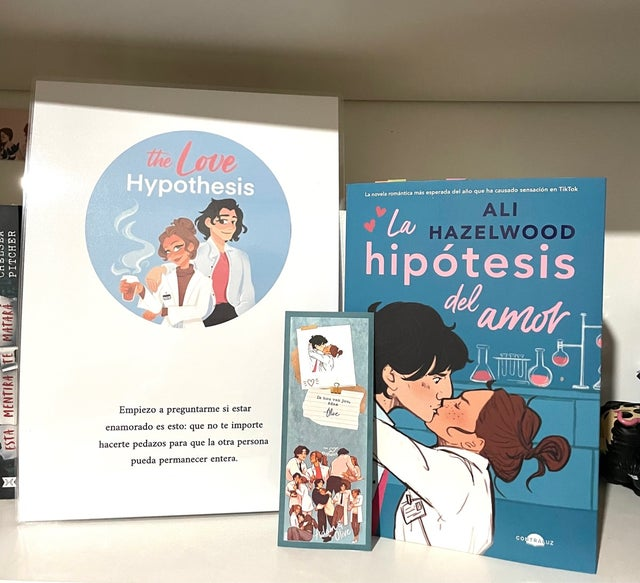

Se le escapó una risita. Estaba convencida de que no era ese tipo de chica, pero ahí estaba, tapándose la boca con la mano y… sí, riéndose como una tonta en medio del laboratorio.

Olive Smith es una doctoranda de tercer año que no cree en las relaciones amorosas duraderas, pero su mejor amiga, Ahn, sí, y por eso Olive se ha metido en un lío monumental.
A Ahn le gusta el exnovio de Olive, pero jamás daría el primer paso porque es una buena amiga. Convencerla de que ha pasado página y de que está construyendo su «fueron felices y comieron perdices» no va a resultarle nada fácil a Olive, puesto que los científicos necesitan pruebas.
Por eso, como cualquier mujer con un mínimo de amor propio, se deja llevar por el pánico y besa al primer hombre con el que se encuentra para que Ahn la vea. Ese hombre es nada más y nada menos que Adam Carlsen, un joven profesor tan reputado por la calidad de su trabajo como por su imbecilidad. Así que Olive se queda de piedra cuando Carlsen accede a mantener su farsa en secreto y ser su novio falso.
Sin embargo, después de que un importante congreso científico se convierta en un desastre y Adam vuelva a sorprenderla con su apoyo inquebrantable (y sus inquebrantables abdominales), su pequeño experimento se acerca peligrosamente al punto de combustión. Olive no tarda en descubrir que la única cosa más complicada que una hipótesis sobre el amor es analizar su propio corazón bajo el microscopio.
—. Ojalá te vieras como te veo yo. Tal vez fueran las palabras, o quizá el tono. A lo mejor fue porque acababa de contarle algo de sí mismo o porque antes la había agarrado de la mano y la había salvado de su desgracia.
El problema de tratar con ganas de no pensar en algo, es que pensaba en eso incluso más.
Aristóteles es introvertido y tímido. Dante es transparente y expresivo.
Por motivos que parecen escapar a toda razón, estos dos chicos de diecisiete años se encuentran y construyen una amistad entrañable que les permitirá redefinir el mundo del otro y aprender a creer en ellos mismos para descubrir los secretos del universo.
El escritor multipremiado, Benjamin Alire Sáenz, explora la lealtad y la confianza entre dos jóvenes que están aprendiendo a ser adultos en un escenario fronterizo tan mexicano como estadounidense. Juntos deberán crecer al mismo tiempo en que se adaptan a una sociedad que también está en permanente búsqueda de identidad.
Me pregunté cómo se sentía eso, realmente agradarse. Y me pregunté por qué algunas personas no se agradaban y otras sí; quizás así eran las cosas."
Digamos que Macallan y Levi fueron amigos a primera vista. Todo el mundo dice que chicos y chicas no pueden ser amigos de verdad, pero ellos lo son. Y mucho.
Quedan después del instituto, comparten miles de chistes que solo ellos entienden, sus familias están superunidas. Levi y Macallan solo son amigos, y están felices así. Pero, claro, los chicos no piden salir a Macallan porque piensan que está con Levi y Levi pasa tanto tiempo con ella que no le queda tiempo para sus novias.
Así que un día comenzarán a preguntarse si no estarían mejor juntos. Aunque quizá eso complique demasiado su relación.